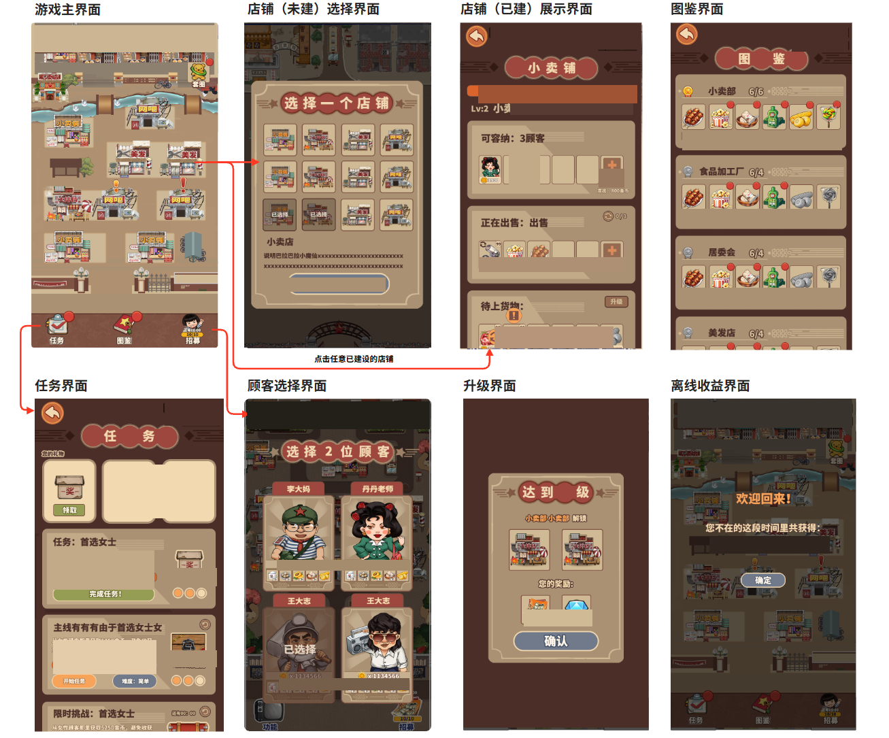
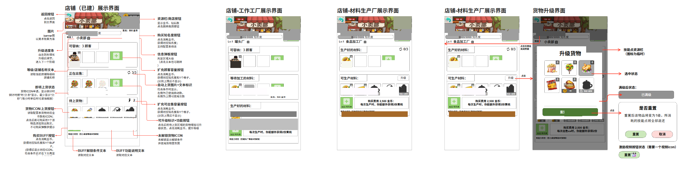
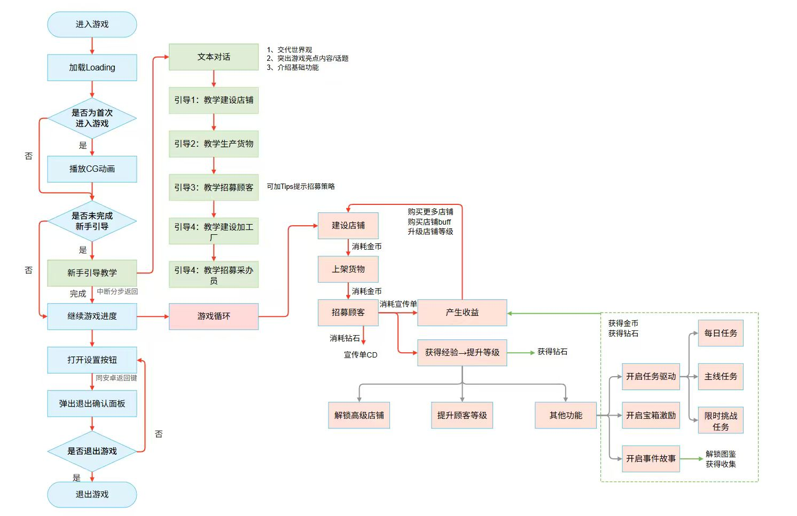
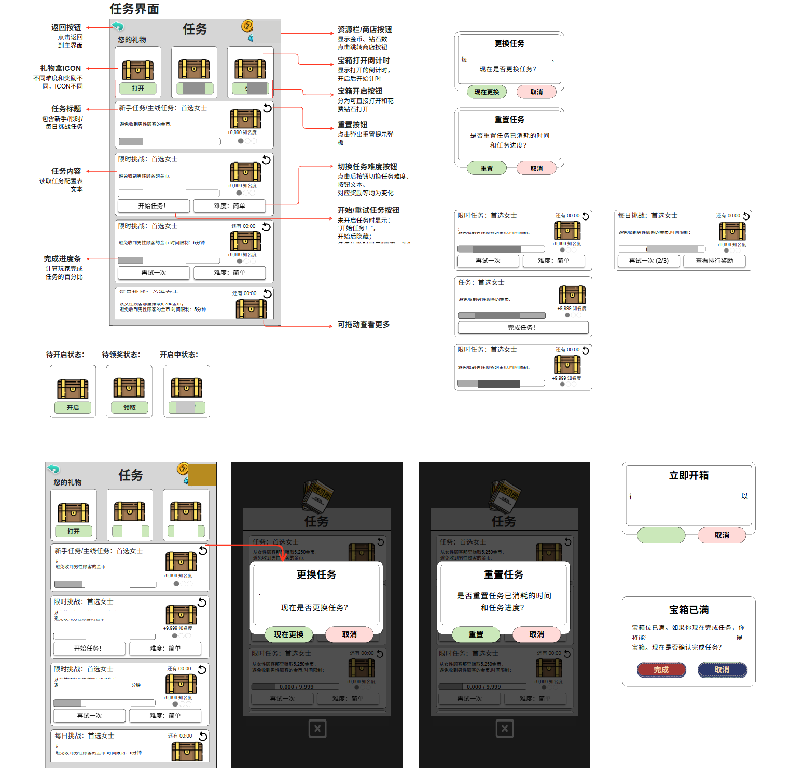
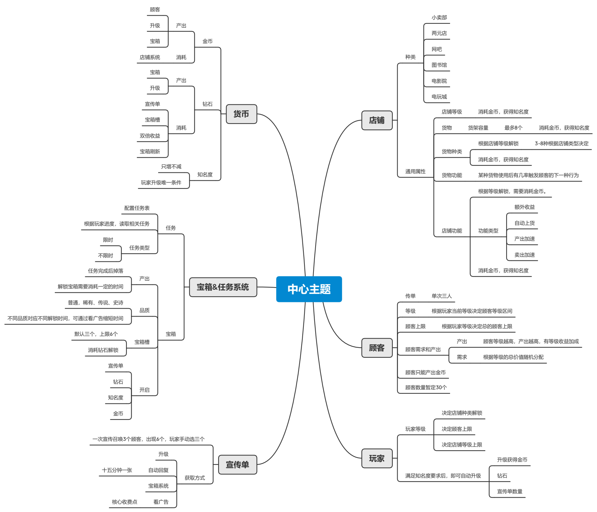

从小镇地图到建店与招募

设计问题
怎样让玩家在小镇主场景里知道下一步可以做什么？
图示产出
界面总览保留各功能的标题和地图至店铺、任务、招募的跳转箭头。
关键方案
- 点击空地进入店铺选择，点击已建店铺查看经营详情。
- 店铺列表展示建筑外观与占用状态，方便比较可选建筑。
- 招募面板以角色卡片呈现候选顾客，确认后回到经营场景。
在页面内阅读从小镇地图到建店与招募大图

PROJECT JOURNAL / 设计资料摘要
经营流程、新手体验与任务状态。
SYSTEM / GAMEPLAY / UI·UE
从小镇地图选址开店，安排货物生产与上架，再通过顾客招募和任务奖励推动经营。下面用历史界面稿展示各环节的操作。
我的任职角色：主策划，2021.05—2022.07。资料来自用户指定的牧游科技项目目录与提供的历史截图；下方为本站整理的阅读摘要，不认定全部方案由个人独立完成，团队美术产出不归为个人美术执行。历史设计图不代表全部功能最终上线，示例数值不是经营成果。
怎样让玩家在小镇主场景里知道下一步可以做什么？
界面总览保留各功能的标题和地图至店铺、任务、招募的跳转箭头。


如何把店铺销售和加工厂生产的不同流程做成容易理解的操作？
从左到右对照已建店铺、加工厂、材料生产和货物升级，并用箭头标注各项操作。


首次进入如何逐步建立经营认知，中断后又怎样回到尚未完成的步骤？
流程图覆盖首次进入、引导步骤、恢复分支、常规经营及退出，可作为策划、程序和测试对齐流程的讨论依据。


怎样让玩家看清宝箱当前可做什么，以及重置任务会影响什么？
上图标注任务与宝箱各状态，下图对照更换、重置、立即开箱和宝箱已满时的确认界面。

让店铺、顾客和成长资源形成相互支撑的系统，而非堆叠功能。

让店铺、顾客和成长资源形成相互支撑的系统，而非堆叠功能。
经营系统关系与资源产消框架；原图为历史方案，示例数量和档位不代表最终版本。

把经营投入和成长回报整理为可对照的配置口径。
| 设计分区 | 工作内容 | 设计用途 |
|---|---|---|
| 货物基础 | 售价 · 造价 · 数量 | 统一经营收益口径 |
| 成长配置 | 等级 · 售价 · 收益 | 对照投入与成长回报 |
| 分组检查 | 成本 · 盈利 · 均值 | 比较不同建筑的配置结构 |
把经营投入和成长回报整理为可对照的配置口径。
《物品数值》表包含货物、升级售价及转置视图；本页只重组字段关系，不公开数值、公式参数或完整配置。
从玩法和系统方案进入文档、资源需求与研发衔接。
| 设计分区 | 工作内容 | 历史记录 |
|---|---|---|
| 基础与方向 | 基础文档 · 主题 | 文档完成，主题进行中 |
| 功能与体验 | 任务宝箱 · 图鉴 · 新手 | 历史记录为完成 |
| 内容与资源 | 文案 · 角色美需 | 历史记录为完成 |
| 数值设计 | 产消 · 价格 · 增益 | 历史记录为进行中 |
从玩法和系统方案进入文档、资源需求与研发衔接。
《项目甘特图》明确记录本人策划工作项；工程验收行当时为待启动且无具体任务，不据此声称已完成验收、实际工期或正式上线。
项目目录包含系统框架、游戏流程与美术资源需求。界面配图保留线框、跳转箭头和操作说明，部分示例数值已遮盖。系统框架、物品数值与交付计划依据历史资料整理。